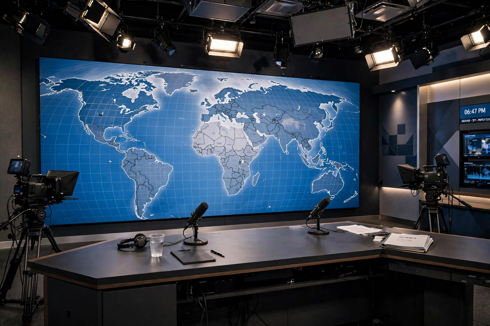

Top stories
Breaking news and live coverage from Sky News

Sky News' site is built around live television: the rolling channel streams beside the top stories, with strong UK, politics and US coverage and its long-running 'first for breaking news' identity.
UK
British news from Westminster to the regions
Domestic coverage is the channel's core.
Politics
Westminster, elections and the lobby
Political coverage with Sunday programming.
World
Correspondents and agency coverage worldwide
International stories.
US
American news from the Washington bureau
US coverage is a substantial Sky vertical.